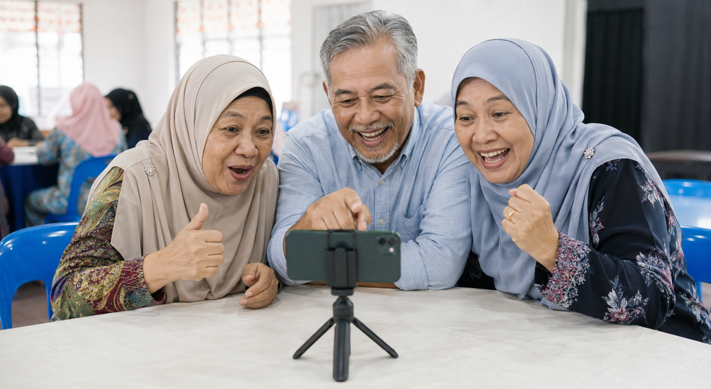

Buka bahagian Video
Buka Gemini, tekan Menu dan pilih Videos.
Aktiviti kemuncak
Cipta klip ringkas daripada arahan teks menggunakan telefon pintar.

Buka Gemini, tekan Menu dan pilih Videos.
Nyatakan subjek, pergerakan, tempat, suasana, kamera dan tempoh.
Tekan Submit. Penghasilan mungkin mengambil beberapa minit.
Tekan Share di bawah video dan pilih simpan ke telefon.
Seorang pesara menyiram pokok cili pada waktu pagi, video menegak 10 saat, realistik, kamera jarak dekat.
Rakan pesara menikmati teh dan kuih tradisional di serambi rumah, video 10 saat, suasana mesra.